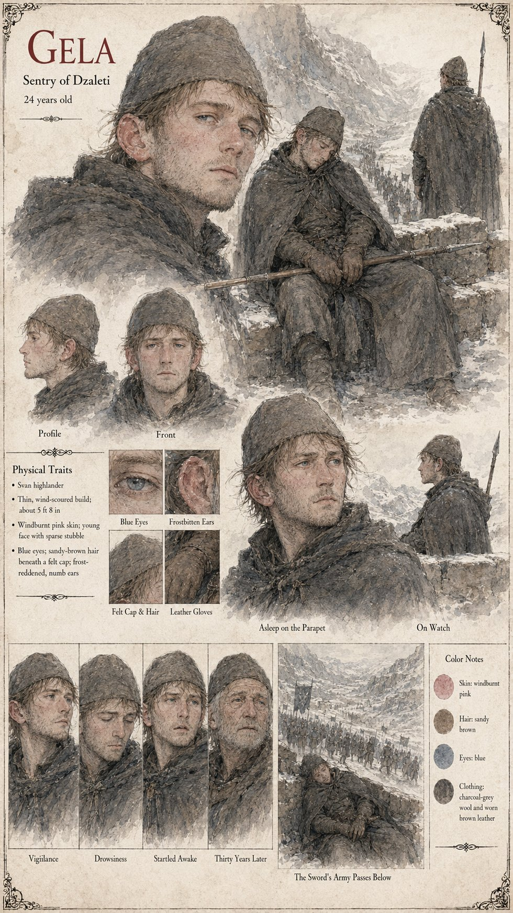

Gela
Sentry on the tower of Dzaleti, thirty hours on watch · later prisoner, then freedman · 24 on his sheet
The sentry on the tower of Dzaleti, a squat black thing of boulders and iron on a spur at the narrowest place of the only road from the plain to the high valleys, which its Warden, Giorgi, has closed to the Sword’s army. Gela has been on watch for thirty hours in a wind that comes off the snow like a rasp, and somewhere in the twenty-fifth hour has stopped being able to feel his ears. Then a fog comes down and the wind stops, as if somebody had put a hand over the mouth of the mountain, and the cold goes soft, and he has never in his life been so grateful to a weather. He sits down on the parapet with his spear across his knees. He thinks the Mother must be kind after all. He closes his eyes.
The fog is the Mother’s own arrow, stolen from the mill-shrine at Mesvana by Ioseb and drawn by the king. The Sword’s army passes below like a rumour and loses two hundred and ten men over the unseen edge of the road; the tower is taken without a blow, and they find him asleep. He tells the story for thirty years, first as a prisoner and then as a freedman, as the best sleep of his life, and as proof of the Mother’s mercy. The manuscript allows that he is, in a sense, correct: the fog was the Mother’s. It had simply been lent. Giorgi surrenders the tower the same noon, and the eleven hundred households that lived on its toll are left to eat, by the second winter, the seed they had meant to sell.
The manuscript gives his thirty hours, his ears, his spear and the story he told. The sheet’s age of 24, thin, wind-scoured build of about 5 ft 8 in, windburnt pink skin with sparse stubble, blue eyes, sandy-brown hair under a felt cap, frost-reddened ears, leather gloves, charcoal-grey wool cloak and worn brown leather are its own, as are its panels Vigilance, Drowsiness, Startled Awake and Thirty Years Later, which draws him as an old man, and its scenes Asleep on the Parapet, On Watch and The Sword’s Army Passes Below.
“the best sleep of his life”